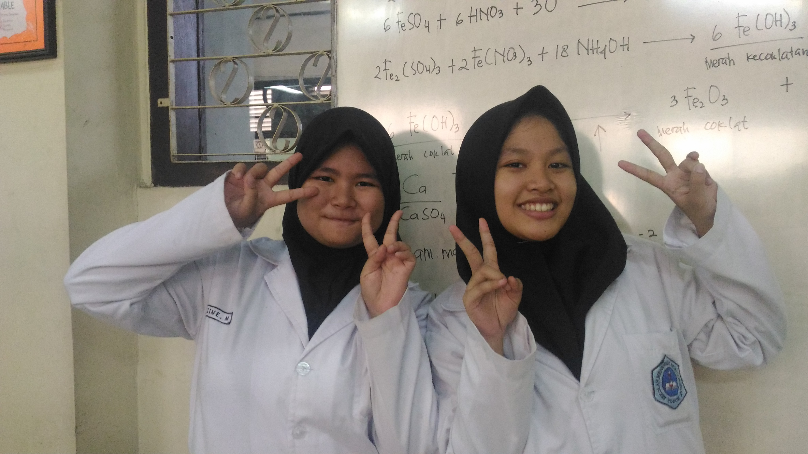
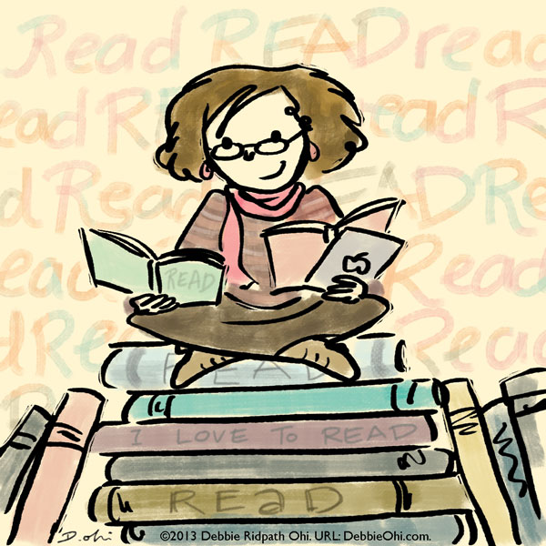
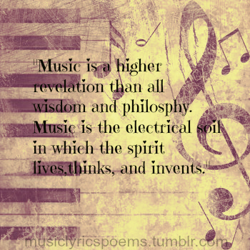

Welcome Guys!!!

-A labil person who loves ice cream and music-
About Me
Haloha, erlin disini!! Sebenarnya tujuan erlin membuat halaman ini untuk menyelesaikan tugas dari sekolah, meskipun sedikit bikin stress pas ngerjainnya karna pas awal ga ngerti sama sekali soal html, css, dan sebagianya, tapi masih enjoy kok ngerjainnya .
Sekilas cerita tentang profil dan sifat diri. Aku Earlene Novalyana, aku punya banyak nama panggilan diantaranya Erlin, Elin, Lin, Linlin, Mochi, sampai Squishy. Sekedar info saja, aku dilahirkan di Bogor tanggal 4 November 2001 (belum legal huhu…). Terlahir di tengah keluarga sederhana dengan Ibunda yang cantik, Ayah yang unik, dan adik yang menyebalkan membuat hidupku terasa lengkap. Riwayat pendidikan? Sekolah pertamaku adalah RA Uswatun Hasanah, lalu berlanjut ke SDN Cibuluh 1, lalu ke SMPN 5 Bogor, dan sekarang aku bersekolah di sekolah menengah atas yang terbaik tetapi memiliki waktu pelajaran yang sangat memangkas waktu tidur (baca: SMAKBo). Tapi percayalah, aku bahagia bisa bersekolah disini karena aku memiliki teman dan sahabat terbaik. Hobiku? Sebenarnya aku punya banyak hobi untuk mengisi waktu luang (maksud: melarikan diri dari tugas). Tapi yang paling aku suka adalah membaca buku terutama novel dan karya sastra lainnya, menulis, bernyanyi, dan ngerecokin orang-orang di sekitarku *ketawajahad*.
About My Hobby
Aku mencintai music dan sastra. Kenapa aku mencintai music dan sastra? Bagiku, music adalah pelarian diri disaat aku sudah mulai mumet dengan tugas sekolah. Aku suka bernyanyi dan menurutku suaraku tidak terlalu buruk. Aku juga salah satu anggota paduan suara sekolahku. Genre music favoritku sebenarnya random, asalkan aku suka melodinya dan makna dari lagu itu sesuai denganku. Sedangkan sastra, menurutku sastra adalah karya seni yang paling megah (wuihh bahasanya). Maksudnya, tidak mudah untuk menuangkan dan mengekspresikan pikiran dan perasaan melalui kata-kata yang disusun menjadi kalimat-kalimat indah dan bermakna. Untuk memahami sebuah karya sastra pun tidak mudah, karena butuh feeling dan tingkat kepekaan yang tinggi. Selain itu, sebuah karya sastra juga mewakili berbagai makna tergantung bagaimana seseorang menangkap makna tersebut.
 Final things
Akhir kata, maafkan bila isi halaman ini masih gajelas dan topiknya masih ngalor-ngidul kemana-mana. Yaa… namanya juga masih belajar lah ya? Semoga saja kedepannya bisa lebih baik lagi. Sampai jumpa di lain waktu. Jaa…